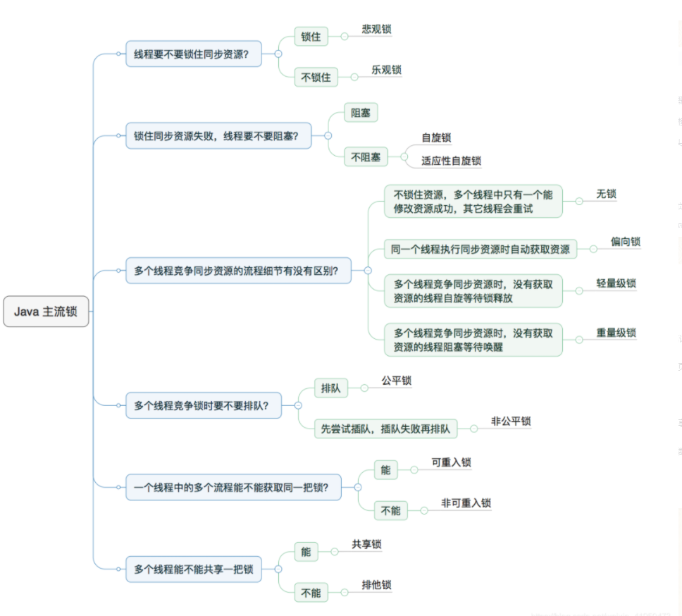
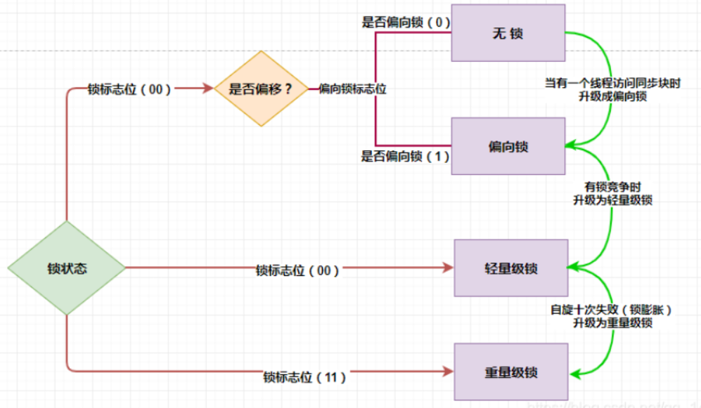

记沈工作结束后去北面试简单总结。
# 锁升级

# 锁的状态
- 无锁
- 偏向锁
- 轻量级锁
- 重量级锁
我们的锁信息是存放在对象头的 markword 里面的。
# 无锁
无锁是指没有对资源进行锁定，所有的线程都能访问并修改同一个资源，但同时只有一个线程能修改成功。
无锁的特点是修改操作会在循环内进行，线程会不断的尝试修改共享资源。如果没有冲突就修改成功并退出，否则就会继续循环尝试。如果有多个线程修改同一个值，必定会有一个线程能修改成功，而其他修改失败的线程会不断重试直到修改成功。
# 偏向锁
偏向锁是指当一段同步代码一直被同一个线程所访问时，即不存在多个线程的竞争时，那么该线程在后续访问时便会自动获得锁，从而降低获取锁带来的消耗，即提高性能。
初次执行到 synchronized 代码块的时候，锁对象变成偏向锁（通过 CAS 修改对象头里的锁标志位），字面意思是 “偏向于第一个获得它的线程” 的锁。执行完同步代码块后，线程并不会主动释放偏向锁。当第二次到达同步代码块时，线程会判断此时持有锁的线程是否就是自己（持有锁的线程 ID 也在对象头里），如果是则正常往下执行。由于之前没有释放锁，这里也就不需要重新加锁。如果自始至终使用锁的线程只有一个，很明显偏向锁几乎没有额外开销，性能极高。
# 轻量级锁
轻量级锁是指当锁是偏向锁的时候，却被另外的线程所访问，此时偏向锁就会升级为轻量级锁，其他线程会通过自旋（关于自旋的介绍见文末）的形式尝试获取锁，线程不会阻塞，从而提高性能。
在轻量级锁状态下继续锁竞争，没有抢到锁的线程将自旋，即不停地循环判断锁是否能够被成功获取。获取锁的操作，其实就是通过 CAS 修改对象头里的锁标志位。先比较当前锁标志位是否为 “释放”，如果是则将其设置为 “锁定”，比较并设置是原子性发生的。这就算抢到锁了，然后线程将当前锁的持有者信息修改为自己。
# 重量级锁
重量级锁是指当有一个线程获取锁之后，其余所有等待获取该锁的线程都会处于阻塞状态。
简言之，就是所有的控制权都交给了操作系统，由操作系统来负责线程间的调度和线程的状态变更。而这样会出现频繁地对线程运行状态的切换，线程的挂起和唤醒，从而消耗大量的系统资源。
# 锁升级过程
# 无锁到偏向锁
初次执行到 synchronized 代码块的时候，锁对象变成偏向锁，通过 CAS 修改对象头里的锁标志位。
# 偏向锁到轻量级锁
轻量级锁是指当锁是偏向锁的时候，却被另外的线程所访问，此时偏向锁就会升级为轻量级锁
# 轻量级锁到重量级锁
如果锁竞争情况严重，某个达到最大自旋次数的线程，会将轻量级锁升级为重量级锁，依然是 CAS 修改锁标志位，但不修改持有锁的线程 ID。

# 锁升级的目的
# 锁竞争
这里要明确一下什么是锁竞争：如果多个线程轮流获取一个锁，但是每次获取锁的时候都很顺利，没有发生阻塞，那么就不存在锁竞争。只有当某线程尝试获取锁的时候，发现该锁已经被占用，只能等待其释放，这才发生了锁竞争。
我们 Java 团队发现，很多情况下，即便是多线程环境，由于每次占用资源的时间短，实际上可能没有发生锁竞争，偏向锁主要就是对这个层面进行优化。
# 自旋
轻量级锁是通过自选的方式来等待资源的，在 Jdk1.6 我们的自旋尝试次数是一个 JVM 参数，默认是 10。但是在后序版本中，自旋的尝试次数都交给 JVM 进行控制，也就是编程了自适应自旋锁。
简单的说就是锁变聪明了，假如上一次 CAS 尝试了十次并且成功了。我们此次 CAS 自旋了十次也没有成功，但是由于上一次 CAS 成功了，我们自适应自旋锁认为本次也很可能成功，会多尝试几次。
# 忙等
长时间的自旋操作是非常消耗资源的，一个线程持有锁，其他线程就只能在原地空耗 CPU，执行不了任何有效的任务，这种现象叫做忙等（busy-waiting）。如果多个线程用一个锁，但是没有发生锁竞争，或者发生了很轻微的锁竞争，那么 synchronized 就用轻量级锁，允许短时间的忙等现象。这是一种折衷的想法，短时间的忙等，换取线程在用户态和内核态之间切换的开销。
用户态和内核态
# 线程挂起
重量级锁是指当有一个线程获取锁之后，其余所有等待获取该锁的线程都会处于阻塞状态。
简言之，就是所有的控制权都交给了操作系统，由操作系统来负责线程间的调度和线程的状态变更。而这样会出现频繁地对线程运行状态的切换，线程的挂起和唤醒，从而消耗大量的系统资源。
转载原文链接：https://blog.csdn.net/weixin_44141495/article/details/108553276
# 接口安全性
https://oxyzen-wxf.github.io/worknote/interface-safety-1/
# mysql 排名
https://oxyzen-wxf.github.io/database/mysql/mysql-3/
# 内存泄漏
例如数据库连接 io 流连接 未关闭可能会导致内存泄漏